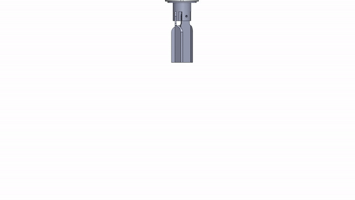

Extend.
Hold the outer shaft, rotate the lead screw and telescope the tubes towards the commanded depth.
Inventors: Aaromal S. Ram, Bryan Vas, Rukhsar, Shobit Verma.
Settled waste in a deep reservoir needs agitation before it can be removed. The design challenge was to reach a depth of 5 m through a narrow 0.4 m access opening, while retracting the shaft to approximately 1 m for transport. A telescopic screw-driven shaft and folding impeller bring that reach into a compact, portable assembly.
Developed for the Solinas Product Design Challenge at Inter IIT Tech Meet 12.0, the proposed system combines mechanical extension and blade engagement with encoder-based depth feedback, motor control, MATLAB Simulink modelling, structural FEA and Ansys CFD. The supplied work documents the design and its simulations.
During extension, a linear actuator locks the outer shaft against rotation. The lead screw turns within the threaded telescopic assembly, converting rotation into axial travel while slots prevent the tubes from rotating. Releasing the lock allows the assembly to rotate for mixing; the report describes the thread arrangement as self-locking.
Hold the outer shaft, rotate the lead screw and telescope the tubes towards the commanded depth.
Use encoder counts to track travel and release the locking actuator when the selected depth is reached.
Rotate the shaft and impeller together, with speed and direction selected at the operating console.
At full extension, the presentation shows the tube slots disengaging mechanically to begin rotation. The actuator also permits operation at an intermediate depth. The stated 100 screw revolutions take 50 seconds at 120 RPM; this is the report’s extension estimate.
The supplied electronics use an Arduino Nano microcontroller, a regulated 5 V logic supply, a bidirectional motor driver and a separate output for the locking solenoid or linear actuator. A rotary encoder supplies depth feedback, and the LCD shows the requested depth, attained depth and operating speed.
Select set_depth and adjust the depth input. Encoder feedback tracks shaft extension until the target is reached.
Select on, choose the rotation direction and set the required RPM. The locking actuator releases the shaft for mixing.
Reduce RPM to zero, return to set_depth and retract, then select off to stop the drive and hold the shaft.
The CAD panel uses two mode switches, while the circuit and code describe one switch with three states: off, set_depth and on. Both arrangements appear in the source material.
The MATLAB Simulink study compares clockwise rotation, counterclockwise rotation, extension to a 2 m target and the off state. Each original figure pairs the model with its scope traces, showing the direction response, the depth target and the removal of motor drive when off.
The on state with clockwise direction produces the negative rotational response shown in the source plot.
Reversing the direction input changes the sign of the rotational response.
In set_depth mode, the shaft advances to the commanded depth and motor power is cut when that target is reached.
The off state removes motor power and holds the shaft so that its selected length does not change.
The Ansys study uses a moving reference frame (MRF) around the impeller. The rotating region introduces centrifugal and Coriolis terms while the geometry remains stationary in the simulation. The source figures below preserve the original meshes, contour scales and velocity-vector plots.

The technical report interprets these results as effective mixing within an approximately 250 mm vertical region around the impeller, and proposes operating at different heights to cover more of the reservoir. The plots describe the analysed configuration; they do not provide a measured whole-tank homogenisation time.
The structural calculation treats the innermost threaded shaft as the critical component at full extension. The source load case combines approximately 242.84 N axial load from a 24.78 kg assembly with 350 N·m torque, using Al 6061-T6. The analytical fatigue calculation uses distortion-energy stresses and a modified Goodman criterion.
The report selects an SKF 6004 deep-groove ball bearing with a 20 mm bore and includes its equivalent-load and rating-life calculation. The original calculation is reproduced below alongside the shaft study.
Locate the motor controller, power supply and user interface on the external operating console, with mechanical transmission below.
The report proposes sealed joints and bearings, appropriate surface finishes and verification of ingress protection for the intended environment.
Replace damaged blades independently and consider wear-resistant coatings and vibration isolation to reduce wear and seal loading.
The original CAD views show the operating console, stand, telescopic shaft and folding impeller. Select a view to inspect the mechanism, or open the image at full size.
Inventors: Aaromal S. Ram, Bryan Vas, Rukhsar, Shobit Verma.
Patent report ↗Patent certificate followed by the complete supplied report on the mechanism, electronics, simulations, CFD and FEA.
PDF · 1 PAGEOriginal components, quantities and approximate project cost.
CADGet in touch to request the slurry agitator assembly model.
PDF · 32 SLIDESOriginal presentation covering the mechanism, dimensions, circuit, control states and analysis.